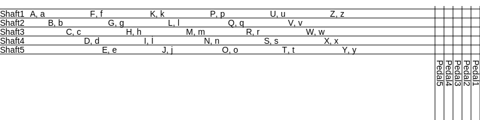
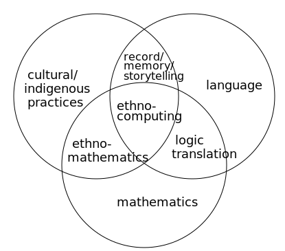

“The yarn is neither metaphorical nor literal, but quite simply material, a gathering of threads which twist and turn through the history of computing, technology, the sciences and arts. In and out of the punched holes of automated looms, up and down through the ages of spinning and weaving, back and forth through the fabrication of fabrics, shuttles and looms, cotton and silk, canvas and paper, brushes and pens, typewriters, carriages, telephone wires, synthetic fibers, electrical filaments, silicon strands, fiber-optic cables, pixeled screens, telecom lines, the World Wide Web, the Net, and matrices to come .”
For centuries, weavers have employed a customized textual weaving algorithm, called ‘name drafting’, to encode their personal stories and experiences on rugs and textiles. The core of this piece is based on this centuries-old weaving algorithm. As the user types in the text box, the characters are coded to the threads and pedals using the appropriate algorithm. This algorithm uses letters as the threads that generate the weaving process itself. Each letter of the alphabet is encoded according to the threads that run through the shafts. They intertwine within the structure of the weave to form the design.
The top column of the draft represents the threads that run through the shafts and the side column represents the pedals. As the user types in the text box, the characters are coded simultaneously to the threads and pedals using the appropriate algorithm. When the 'weave your text' command is enabled, the 'woven text draft' in the center of the sketch is generated by the user's text input. Or, you can use the 'word index' button to create your weaving draft from a preset word. The 'tie-up' in the top right corner of the sketch is the smallest pattern unit that makes up the weave. And each time the 'change tie-up' button is pressed, a new variation of your text weave is generated. Here you can see the physical weaving outputs created with two separate text inputs:
TextDraft/Weaving with Text proposes thinking about the fields of weaving and language together to reveal alternate possibilities. It explores the transformation and preservation of memory and recording, imagining a symbiotic relationship between language and weaving systems. The project focuses on the role of weaving as a socio-cultural repository of memory and the metamorphosis of language created through weaving, especially by women throughout history.
Through language, people develop logical processes of quantification, measurement and modeling to understand and explain socio-cultural and historical contexts. Just as the technological development itself can be perceived as a "feminization" of culture that will lead to an increasing dissolution of gender, the art of weaving can also lead to a subversion of gender roles. It is well known that women, in particular, create cultural memory by disseminating these models (such as weaving) within their own communication networks, mostly verbally, sometimes in written and drawn form within and between households. These tools are used to discover relationships, patterns and regularities by schematising, formulating and visualizing a problem in different ways. By translating the reality of the world into mathematical ideas, they have recorded concepts, situations and practices. Cultural politics is therefore closely related to ethno-technics. Such diversity of local and cultural knowledge can therefore also contribute to 'technological diversity' in a world moving towards 'technological singularity'.To address these challenges, this project aims to examine the intersection of digital language and traditional weaving techniques and create new ways of expressing and documenting politics in the context of discourse and the recording of memory.
Weaving has played a crucial role in connecting women with technology throughout history. Across numerous cultures, it was regarded as a female-dominated craft,which was essential in disseminating and documenting information , along with the production of textiles. The contribution of women in weaving is akin to the pivotal role played by machines and tools in contemporary times. With modern communication tools, the issues of visibility and invisibility have evolved, thereby altering the nature of expression and the accompanying risks.
TEXTDRAFT considers the transformative potential of weaving in the realm of gender roles. The project aims to archive daily or periodic concerns and situations, as women do through history by weaving, and reverse it through today’s communication tools. This approach not only empowers expression itself through new forms of storytelling, but also contributes to a larger discourse on gender equality and social justice, ultimately creating new possibilities. In line with technological advances catalyzing cultural change, the art of weaving is explored as a conduit for analogous social change. The project proposes an avenue for amplifying narrative and discourse of gender equality and social justice.